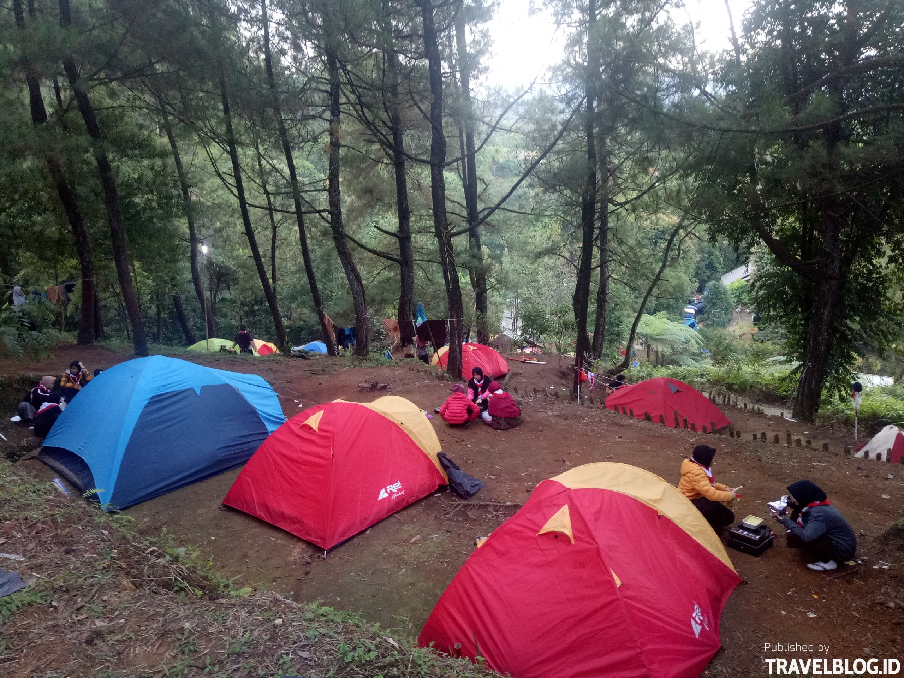
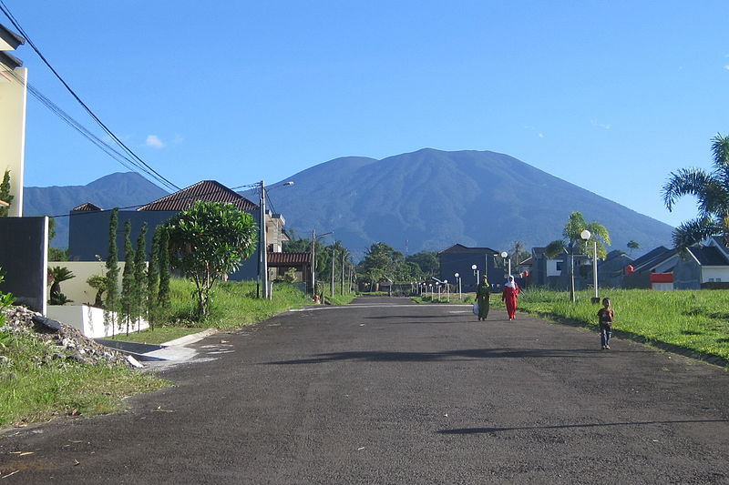

Lapangan Sempur

Lapangan yang dahulu merupakan lahan kosong yang dipergunakan sebagai lapangan upacara untuk memperingati HUT Republik Indonesia setiap tanggal 17 Agustus ini, sekarang sudah dikelola oleh Dinas Pemakaman dan Pertamanan Kota Bogor. Lapangan ini sekarang dijadikan tempat olahraga dan lapangan multifungsi. Di lapangan ini terdapat wall-climb, lapangan basket, lapangan utama untuk bermain bola dan soft/baseball, run-track, lapangan voli beralaskan pasir pantai, serta area untuk senam. Pada hari Minggu tempat ini akan menjadi pasar dadakan, banyak pedagang makanan ataupun alat-alat yang menggelar dagangannya di sini setiap hari Minggu. Lapangan ini kerap digunakan untuk berbagai pergelaran musik.
Gunung Bunder
Lapangan yang dahulu merupakan lahan kosong yang dipergunakan sebagai lapangan upacara untuk memperingati HUT Republik Indonesia setiap tanggal 17 Agustus ini, sekarang sudah dikelola oleh Dinas Pemakaman dan Pertamanan Kota Bogor. Lapangan ini sekarang dijadikan tempat olahraga dan lapangan multifungsi. Di lapangan ini terdapat wall-climb, lapangan basket, lapangan utama untuk bermain bola dan soft/baseball, run-track, lapangan voli beralaskan pasir pantai, serta area untuk senam. Pada hari Minggu tempat ini akan menjadi pasar dadakan, banyak pedagang makanan ataupun alat-alat yang menggelar dagangannya di sini setiap hari Minggu. Lapangan ini kerap digunakan untuk berbagai pergelaran musik.
Gunung Gede
Gunung Gede merupakan sebuah gunung api bertipe stratovolcano yang berada di Pulau Jawa, Indonesia. Gunung Gede berada dalam ruang lingkup Taman Nasional Gede Pangrango, yang merupakan salah satu dari lima taman nasional yang pertama kali diumumkan di Indonesia pada tahun 1980. Gunung ini berada di dua wilayah kabupaten yaitu Kabupaten Cianjur dan Sukabumi, dengan ketinggian 1.000 - 2.958 m. dpl, dan berada pada lintang 106°51' - 107°02' BT dan 64°1' - 65°1 LS. Suhu rata-rata di puncak gunung Gede 18 °C dan di malam hari suhu puncak berkisar 5 °C, dengan curah hujan rata-rata 3.600 mm/tahun. Gerbang utama menuju gunung ini adalah dari Cibodas dan Cipanas.